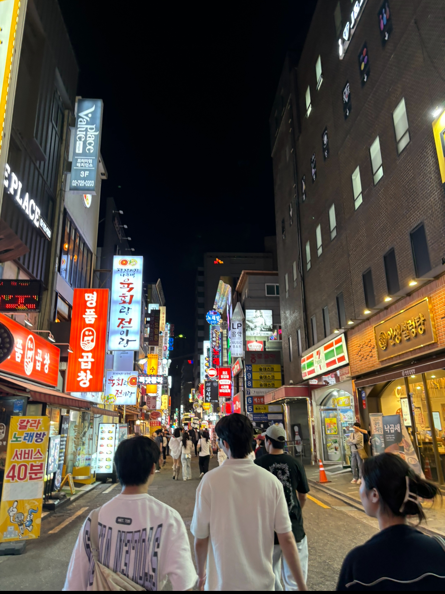

Poker
I am a huge fan of Texas hold'em and Omaha. In terms of hands, my favorite is the doyle Brunson(10 and 2 off suit).
Traveling
Over the past summer, I explored parts of South Korea and Japan. To be more specifc, I was at Seoul, Kyoto, Tokyo, Hiroshima, Osaka.
Spending time with friends
I like my friends.
